Phần cứng Router
Router làm gì?
Một Router (thiết bị định tuyến) chạy một routing protocol (giao thức định tuyến) nào đó để điền thông tin vào forwarding table (bảng chuyển tiếp).
Sau đó, khi một packet (gói tin) đi vào, Router sẽ xem xét destination IP (IP đích) của nó và sử dụng forwarding table để chọn một liên kết để chuyển tiếp packet đi. Hãy nhớ rằng, forwarding table có thể chứa các dải địa chỉ.
Đến giờ, chúng ta vẫn vẽ Router như những chiếc hộp trên sơ đồ. Trong thực tế, Router là một máy tính chuyên dụng được tối ưu hóa để thực hiện các tác vụ định tuyến và chuyển tiếp. Trong phần này, chúng ta sẽ khám phá phần cứng bên trong Router.
Router ở đâu?
Trong đời thực, các gia đình và văn phòng có những chiếc Router nhỏ để kết nối các máy chủ (hosts) với Internet. Vậy tất cả những Router này kết nối với nhau ở đâu?

Colocation facilities (cơ sở hạ tầng chung) hay carrier hotels (khách sạn nhà mạng) là những tòa nhà nơi nhiều ISP (Nhà cung cấp dịch vụ Internet) lắp đặt Router để kết nối với nhau. Các tòa nhà này được thiết kế đặc biệt để có cơ sở hạ tầng về điện và làm mát, và các ISP có thể thuê không gian để lắp đặt Router và kết nối chúng với các Router khác trong cùng tòa nhà.
Bên trong một carrier hotel, các Router được xếp chồng lên nhau trong các rack (giá đỡ) (cao 6-7 feet, rộng 19 inch).
Kích thước và dung lượng Router
Router có đủ mọi kích cỡ, tùy thuộc vào yêu cầu của người dùng. Router gia đình chỉ chuyển tiếp lưu lượng cho một vài người dùng, và forwarding table chỉ có một mục mặc định duy nhất. Router công nghiệp có thể cần chuyển tiếp lưu lượng từ hàng nghìn khách hàng, với một forwarding table khổng lồ.
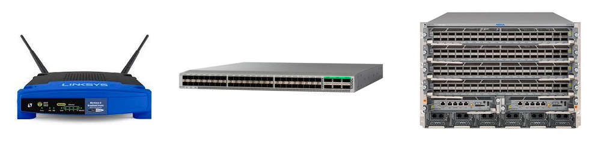Có nhiều cách khác nhau để đo lường kích thước của một Router. Chúng ta có thể xem xét kích thước vật lý, số lượng port (cổng) vật lý mà nó có, và bandwidth (băng thông) của nó.
Chúng ta có thể đo dung lượng của một Router bằng số lượng port vật lý, nhân với bandwidth của mỗi port vật lý. Tốc độ hoặc bandwidth của một port vật lý thường được gọi là line rate (tốc độ đường truyền).
Không phải tất cả các port vật lý đều cần có cùng một line rate. Ví dụ, một Router gia đình hiện đại có thể có 4 port vật lý có thể gửi ở tốc độ 100 Mbps, và 1 port vật lý có thể gửi ở tốc độ 1 Gbps. Tổng dung lượng của Router này là 1.4 Gbps.
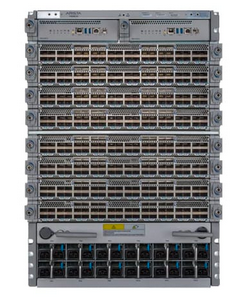Một Router hiện đại tiên tiến được các ISP sử dụng có thể có line rate lên tới 400 Gbps cho mỗi port vật lý.
Router này chứa nhiều line card (card đường truyền) có thể tháo rời, mỗi line card chứa một bộ các port vật lý. Một Router hiện đại có thể có 8 line card, với 36 port vật lý trên mỗi line card, tổng cộng là 288 port vật lý.
288 port vật lý, mỗi port có bandwidth 400 Gbps, mang lại cho Router của chúng ta tổng dung lượng là 115.2 Tbps.
Router này có thể có giá lên tới hơn 1 triệu đô la. Việc chia một Router thành các line card cho phép chúng ta lắp đặt thêm line card khi cần thêm dung lượng.
Trong tương lai, các Router thế hệ tiếp theo sẽ có các port vật lý 800 Gbps. Không gian vật lý cho Router bị hạn chế, vì vậy các cải tiến hiện đại tập trung vào việc cải thiện tốc độ trên mỗi port, thay vì tăng số lượng port. (Việc nhồi nhét thêm port vào cùng một không gian cũng khó khăn do các hạn chế về điện và làm mát.)

Dung lượng Router đã tăng lên qua các năm để đáp ứng sự tăng trưởng nhu cầu của người dùng (ví dụ: chất lượng video đã tăng từ 720p lên 8K = 8000p). Vào năm 2010, các Router tiên tiến có dung lượng 1.7 Tbps, và con số đó đã tăng gấp 100 lần trong thập kỷ qua. Phần lớn sự cải thiện này đến từ việc tăng tốc độ liên kết, từ 10 Gbps vào năm 2010 lên 100 Gbps vào khoảng năm 2016 và 400 Gbps ngày nay. Những cải tiến này đang bắt đầu chậm lại do các hạn chế như Moore's law (định luật Moore) chậm lại và những thách thức vật lý trong việc gửi tín hiệu ở tốc độ cao. Cải tiến tiếp theo lên 800 Gbps chỉ là tăng gấp 2 lần (so với mức tăng 10 lần và 4 lần trước đó).
Các mặt phẳng Dữ liệu, Điều khiển, Quản lý
Các thành phần phần cứng và phần mềm của Router có thể được phân chia về mặt khái niệm thành ba mặt phẳng. data plane (mặt phẳng dữ liệu) chủ yếu chịu trách nhiệm chuyển tiếp packet. data plane được sử dụng mỗi khi một packet đến và cần được chuyển tiếp. data plane hoạt động cục bộ, không phối hợp với các Router khác.
control plane (mặt phẳng điều khiển) chủ yếu chịu trách nhiệm giao tiếp với các Router khác và chạy các routing protocol. Kết quả của các routing protocol đó (ví dụ: forwarding table) sau đó có thể được data plane sử dụng. control plane được sử dụng mỗi khi cấu trúc liên kết của mạng thay đổi (ví dụ: khi các liên kết được thêm vào hoặc loại bỏ).
Bởi vì data plane và control plane hoạt động ở các thang thời gian khác nhau và chạy các giao thức khác nhau, phần cứng và phần mềm của một Router được tối ưu hóa cho các nhiệm vụ khác nhau. Trong thực tế, các packet đến thường xuyên hơn nhiều so với việc cấu trúc liên kết mạng thay đổi. Do đó, data plane được tối ưu hóa để thực hiện các tác vụ rất đơn giản (tra cứu bảng và chuyển tiếp) rất nhanh. Ngược lại, control plane được tối ưu hóa cho các tác vụ phức tạp hơn (tính toán lại các đường đi trong mạng).
management plane (mặt phẳng quản lý) được sử dụng để ra lệnh cho Router phải làm gì và xem chúng đang làm gì. Các hệ thống và con người tương tác với management plane để cấu hình và giám sát Router. Đây là nơi các nhà khai thác có thể cấu hình chức năng của thiết bị. Chi phí nào nên được gán cho mỗi liên kết? routing protocol nào nên được chạy? Những điều này cần được nhà khai thác quyết định thủ công.
Ngoài việc cấu hình, management plane cũng cung cấp các công cụ giám sát. Bao nhiêu lưu lượng đang được truyền qua mỗi liên kết? Có thành phần vật lý nào của Router bị lỗi không? Thông tin này có thể được chuyển lại cho nhà khai thác.
management plane là nơi chính mà các nhà khai thác truy cập và tương tác với Router từ bên ngoài thiết bị. Nếu nhà khai thác đang sử dụng một đoạn mã nào đó để tương tác với Router, chúng ta thường coi đó cũng là một phần của management plane.
data plane và control plane hoạt động trong thời gian thực, nhận và xử lý các packet theo thứ tự nano giây (dữ liệu) và giây (điều khiển). Ngược lại, management plane hoạt động theo thứ tự từ hàng chục đến hàng trăm giây. Nếu nhà khai thác thay đổi một cấu hình, Router có thể mất thời gian thực hiện kiểm tra xác thực và xử lý cấu hình trước khi áp dụng hoàn toàn bản cập nhật.
network management system (NMS) (hệ thống quản lý mạng) là một phần mềm nào đó do nhà khai thác chạy để tương tác với các Router. Phần mềm này tính toán một cấu hình mạng (có thể với sự trợ giúp của đầu vào thủ công từ nhà khai thác), và sau đó áp dụng cấu hình đó cho các Router. Router công bố một số API (Giao diện lập trình ứng dụng) mà hệ thống có thể sử dụng để giao tiếp với Router.
network management system cũng cho phép đọc telemetry (dữ liệu đo lường từ xa) (thống kê và trạng thái hoạt động) từ các Router.
Sự phức tạp của network management system phụ thuộc vào những gì nhà khai thác đang cố gắng đạt được.
Cả ba mặt phẳng đều cần thiết để chạy một Router. Nếu chúng ta chỉ có data plane và không có control plane, chúng ta có thể chuyển tiếp các packet, nhưng chúng ta sẽ không biết phải chuyển tiếp chúng đi đâu.
Bên trong Router có gì?
Chúng ta đã định nghĩa Router là một máy tính thực hiện các tác vụ định tuyến, nhưng trong thực tế, bên trong Router, có nhiều máy tính nhỏ hơn (ví dụ: CPU (bộ xử lý trung tâm), chip chuyên dụng) làm việc cùng nhau để thực hiện các tác vụ định tuyến.
Khung vật lý tạo nên một Router kích thước công nghiệp được gọi là chassis (khung máy). Bên trong chassis, chúng ta lắp đặt nhiều line card, và chúng ta có một số port vật lý trên mỗi line card. Mỗi port vật lý có thể được sử dụng cho đầu vào hoặc đầu ra.
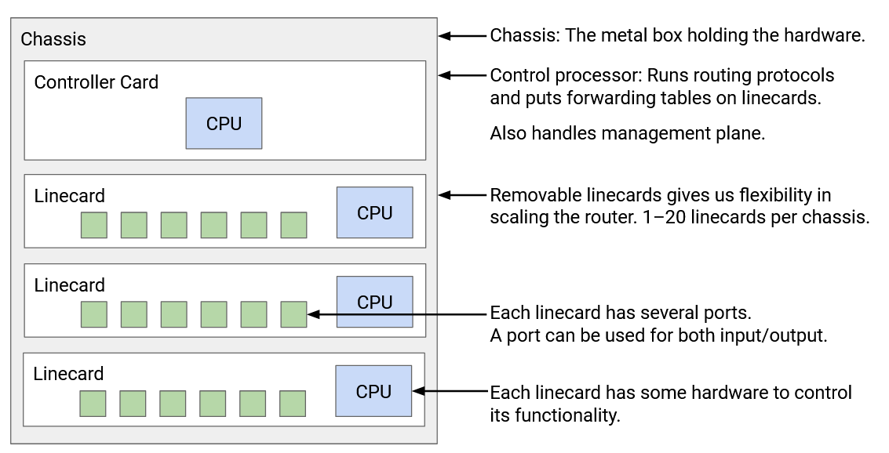Mỗi port vật lý phải được kết nối với mọi port vật lý khác trong Router (cả trong cùng linecard và các linecard khác). Bạn có thể nhận một packet qua một port, và cần phải chuyển tiếp nó ra khỏi một port trên một linecard khác.
Sẽ khá kém hiệu quả nếu nối dây vật lý từ mỗi port đến mọi port khác. Thay vào đó, chúng ta có một fabric (kết cấu chuyển mạch) gồm các dây để kết nối các linecard lại với nhau. Mỗi linecard cũng có các chip để tạo điều kiện kết nối với fabric.
Tách biệt với tất cả các linecard, chúng ta có một card điều khiển với CPU riêng, giao tiếp với các Router khác để thực hiện các routing protocol. Sau khi chạy một thuật toán nào đó để tính toán đường đi, bộ điều khiển sẽ lập trình các chip chuyển tiếp với các mục forwarding table chính xác.
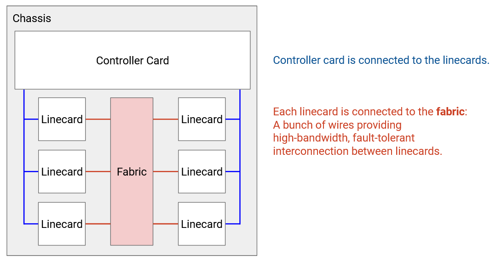Mỗi linecard có CPU cục bộ riêng để điều khiển các chức năng của linecard (ví dụ: điền vào forwarding table). linecard cũng có phần cứng để xử lý cơ bản các packet (ví dụ: cập nhật TTL của nó trước khi gửi đi). linecard chứa một hoặc nhiều chip được tối ưu hóa đặc biệt cho việc chuyển tiếp.
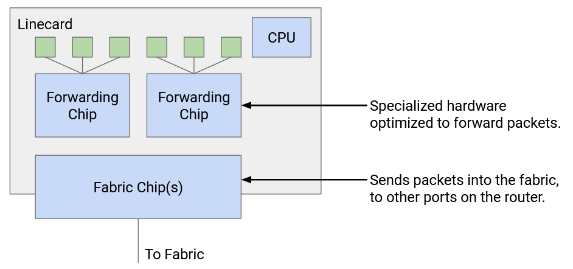Chúng ta cũng có thể phân loại các thành phần của Router theo các mặt phẳng khác nhau. data plane được hỗ trợ bởi các chip chuyển tiếp trên các linecard, fabric kết nối các linecard, và các chip fabric kết nối các linecard với fabric. control plane và management plane được hỗ trợ bởi card điều khiển.
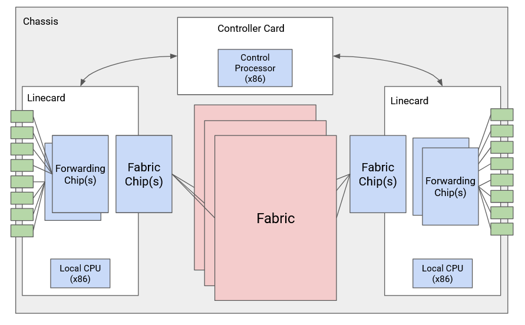Đây là hình ảnh của một Router công nghiệp. Router này có 6 khe cắm, trong đó 4 khe có line card, và 2 khe còn lại có card điều khiển. Ngoài ra còn có một khay quạt để làm mát. fabric kết nối các linecard nằm ở phía sau (không có trong ảnh).

Các loại Packet
Packet phổ biến nhất là user packet (gói tin người dùng), chứa dữ liệu từ một máy chủ đầu cuối. Khi Router nhận packet này, chip chuyển tiếp đầu tiên sẽ đọc trường đích trong phần đầu và tra cứu port thích hợp. Nếu port đó nằm trên một linecard khác, packet sẽ được gửi qua fabric đến linecard thích hợp. Khi packet đến đúng linecard, packet sẽ được gửi đi theo port thích hợp.
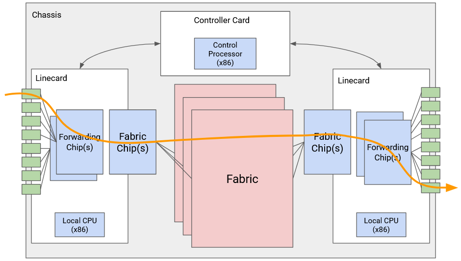Một số packet là control-plane traffic (lưu lượng mặt phẳng điều khiển), được gửi đến chính Router. Cụ thể, khi chúng ta chạy các routing protocol, các thông điệp quảng bá sẽ được gửi đến chính Router. Khi Router nhận packet này, chip chuyển tiếp sẽ gửi packet lên card điều khiển. CPU trên card điều khiển sẽ xử lý packet tương ứng.
Loại lưu lượng cuối cùng là punt traffic (lưu lượng cần xử lý đặc biệt). Đây là các user packet, nhưng chúng yêu cầu một số xử lý đặc biệt bổ sung. Ví dụ, nếu chúng ta nhận được một packet có TTL (Time-to-Live, thời gian sống của gói tin) là 1, packet đã hết hạn, và chúng ta không nên chuyển tiếp nó. Chúng ta cũng có thể cần gửi một thông báo lỗi trở lại cho người gửi. Khi Router nhận một packet loại "punt", chip chuyển tiếp sẽ "punt" (chuyển) packet đó đến card điều khiển để xử lý đặc biệt.
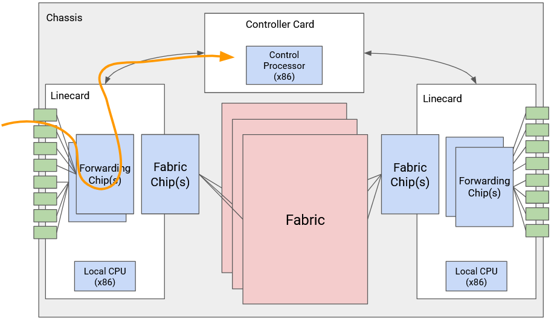Mở rộng quy mô Router
Tại sao Router của chúng ta lại được chia thành kiến trúc cụ thể này, với các chip chuyển tiếp và card điều khiển? Chẳng phải chúng ta có thể chạy mọi thứ trên một CPU đa dụng sao?
Vấn đề là, các Router tiên tiến cần phải hoạt động ở quy mô rất lớn. Với tốc độ hiện đại là 400 Gbps mỗi giây, và giả sử các packet có kích thước 64-byte, chúng ta phải xử lý 781 triệu packet mỗi giây, trên mỗi port. Trên 36 port, toàn bộ Router phải xử lý 56 tỷ packet mỗi giây. (Trong thực tế, con số này có thể thấp hơn một chút nếu một số packet lớn hơn.)
Quy mô này không thể đạt được bằng phần mềm trên một CPU đa dụng. Để có cảm nhận về quy mô, nếu chúng ta thử viết một chương trình để chuyển tiếp packet, và chúng ta chạy chương trình đó trên một CPU, sẽ rất ấn tượng nếu chúng ta có thể chuyển tiếp một packet mỗi 10 micro giây = 0.00001 giây. Một Router tiên tiến cần xử lý một packet trong khoảng 10 nano giây = 0.00000001 giây. Ngay cả phần mềm được tối ưu hóa nhất cũng không thể xử lý packet ở quy mô này. Thay vào đó, chúng ta cần triển khai chức năng của Router trực tiếp trên phần cứng.
Bằng cách chia Router thành các linecard chuyên dụng cho data plane và các card điều khiển cho control plane, chúng ta tạo ra một fast path (đường đi nhanh) và một slow path (đường đi chậm). fast path chỉ liên quan đến phần cứng chuyển tiếp và được tối ưu hóa để chuyển tiếp packet ở tốc độ rất cao. slow path với CPU điều khiển chỉ được sử dụng khi cần thiết, và hầu hết các packet được gửi qua fast path. Các thành phần chuyên dụng này làm cho Router hiệu quả hơn nhiều (sử dụng ít năng lượng hơn, rẻ hơn, chiếm ít không gian vật lý hơn).
Chức năng của Linecard
Một linecard cần phải làm những nhiệm vụ cụ thể nào khi nó nhận một packet?
Đầu tiên, linecard cần phải lấy tín hiệu (ví dụ: quang, điện) và giải mã tín hiệu này thành các bit một và không tạo nên packet. Đây là phần PHY (lớp vật lý) của linecard, xử lý chức năng của lớp vật lý (Lớp 1).
Khi chúng ta đã có một chuỗi các bit một và không, chúng ta phải đọc các bit đó và phân tích chúng (ví dụ: tìm ra bit nào tương ứng với IP header (phần đầu của gói tin IP)). Chúng ta cũng có thể phải thực hiện các hoạt động khác ở lớp liên kết dữ liệu (ví dụ: nếu một liên kết được kết nối với hơn 2 máy). Phần MAC (lớp liên kết dữ liệu) của linecard xử lý chức năng của lớp liên kết dữ liệu (Lớp 2).
Bây giờ chúng ta đã có một packet IP, chúng ta phải phân tích packet đó. Ví dụ, chúng ta cần kiểm tra xem packet là IPv4 hay IPv6. Sau đó, chúng ta phải đọc địa chỉ đích và thực hiện tra cứu để chuyển tiếp (hoặc phát hiện ra rằng chúng ta cần "punt" packet).
Chúng ta cũng có thể cần cập nhật các trường IP header khác nhau. Chúng ta phải giảm TTL. Vì chúng ta đã cập nhật phần đầu, chúng ta cũng cần cập nhật checksum (tổng kiểm tra) trong phần đầu. Chúng ta cũng có thể cần cập nhật các trường khác như tùy chọn và phân mảnh (sẽ được thảo luận chi tiết hơn trong phần IP header).
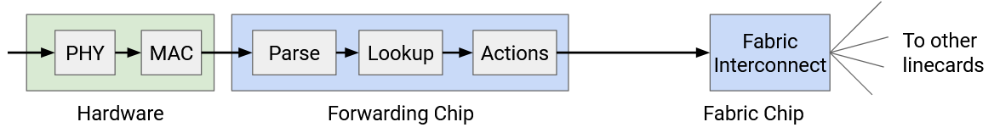Tất cả các chức năng này phải diễn ra trong vài nano giây. Ngay cả khi chúng ta bằng cách nào đó thực hiện tất cả quá trình xử lý trong một chu kỳ xung nhịp, linecard vẫn phải hoạt động ở tốc độ 0.2 GHz. Trong thực tế, tất cả các hoạt động này sẽ mất nhiều hơn một chu kỳ xung nhịp. Ngoài ra, chúng ta phải thực hiện tất cả quá trình xử lý này cho mọi port trên linecard (một chip chuyển tiếp hỗ trợ tất cả các port).
Để làm cho các hoạt động này nhanh chóng, các chip chuyển tiếp cực kỳ chuyên dụng cho các nhiệm vụ hạn chế mà chúng thực hiện (ví dụ: đọc phần đầu packet, tra cứu bảng). Bạn không thể viết một chương trình đa dụng và chạy nó trên một chip chuyển tiếp. Nếu một packet yêu cầu chức năng mà chip chuyển tiếp không thể hỗ trợ, chúng ta luôn có thể "punt" packet đó đến CPU đa dụng trên card điều khiển.
Các hoạt động đơn giản, như giảm TTL, dễ dàng triển khai trong phần cứng. Các hoạt động phức tạp hơn, như các tùy chọn đặc biệt, thường yêu cầu "punt" đến card điều khiển. Trong Internet hiện đại, chúng ta tránh các tùy chọn đặc biệt bất cứ khi nào có thể, để tối đa hóa việc sử dụng fast path và tránh "punt" (nếu chúng ta "punt" mọi thứ, card điều khiển sẽ bị quá tải).
Các chip kết nối fabric cũng được chuyên môn hóa tương tự. Các chip này giúp gửi các packet qua fabric đến các linecard khác. Các chip này có xu hướng là những chip chuyên dụng nhất và hiệu năng cao nhất trong toàn bộ Router.
Hàng đợi Packet
CẦN LÀM
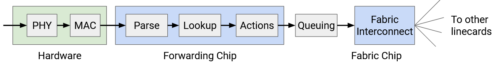Tra cứu Bảng chuyển tiếp hiệu quả
Bây giờ chúng ta biết rằng các router cần thực hiện tra cứu trong các forwarding table ở tốc độ cực kỳ cao. Một thách thức lớn là các mục trong bảng của chúng ta có thể chứa các dải địa chỉ IP (192.0.1.0/24) ngoài các địa chỉ IP riêng lẻ. Ngoài ra, các dải này có thể chồng chéo lên nhau (một đích có thể khớp với nhiều dải). Làm thế nào chúng ta có thể làm cho việc tra cứu cực kỳ nhanh chóng?
Lý tưởng nhất, để có tốc độ tối đa, forwarding table có thể chứa một mục cho mỗi đích, không có dải nào. Khi đó, chúng ta chỉ cần lấy đích trong packet, và tra cứu một kết quả khớp chính xác để biết chặng tiếp theo.
Để đạt được cách tiếp cận lý tưởng này, chúng ta có thể mở rộng mọi dải thành các địa chỉ IP riêng lẻ của nó. Ví dụ, một mục cho tiền tố 24-bit 192.0.1.0/24 sẽ được mở rộng thành 256 mục.
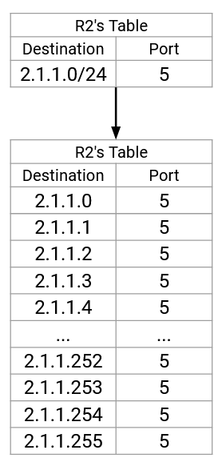Điều này không hiệu quả về mặt không gian (hãy nhớ rằng, điều này đang được triển khai trong phần cứng). Ngoài ra, nếu một tuyến đường thay đổi, chúng ta sẽ phải cập nhật hàng tấn mục trong bảng. Việc mở rộng các tuyến đường sẽ không khả thi, vì vậy chúng ta sẽ phải làm việc với các dải.
Hãy nhớ lại rằng việc tra cứu forwarding table được thực hiện bằng cách sử dụng longest prefix matching (khớp tiền tố dài nhất). Nếu nhiều dải khớp với đích, chúng ta chọn dải cụ thể nhất (có nhiều bit tiền tố được cố định nhất). Nếu không có dải nào khớp, chúng ta chọn default route (tuyến đường mặc định) (., 0.0.0.0/32, khớp với tất cả các đích). Nếu không có default route, chúng ta sẽ loại bỏ packet.
Làm thế nào để chúng ta triển khai longest prefix matching trong phần cứng một cách hiệu quả?
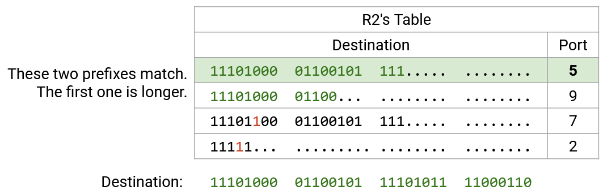CẦN VIẾT LẠI ĐỂ KHỚP VỚI SƠ ĐỒ
Đầu tiên, để dễ đọc, chúng ta viết lại tất cả các dải và đích ở dạng nhị phân. Sau đó, chúng ta quét các bit của đích, từng bit một. Đối với 21 bit đầu tiên, cả bốn dải đều khớp, vì vậy cả bốn dải vẫn còn trong cuộc. Sau đó, bit thứ 22 là 1. Hàng đầu tiên có số 0 ở bit thứ 22, vì vậy chúng ta có thể loại bỏ hàng này (không khớp). Ba hàng còn lại vẫn khớp trong 21 bit đầu tiên, vì vậy chúng vẫn còn trong cuộc.
Tiếp theo, chúng ta kiểm tra bit thứ 23, cũng là 1. Hàng thứ hai và thứ ba có số 0 ở bit thứ 23, vì vậy chúng ta loại bỏ chúng (không khớp). Hàng thứ tư vẫn khớp.
Tại thời điểm này, chúng ta có thể xác nhận rằng hàng thứ tư là một kết quả khớp hoàn toàn, vì nó là một tiền tố 23-bit, và tất cả 23 bit đều khớp. Không cần kiểm tra thêm hàng này nữa.
Chúng ta tiếp tục kiểm tra từng bit, loại bỏ các hàng không khớp, và xác nhận các hàng là kết quả khớp hoàn toàn. Cuối cùng, chúng ta có một hoặc nhiều hàng khớp, và chúng ta chọn kết quả khớp có tiền tố dài nhất.
Nếu chúng ta triển khai điều này một cách ngây thơ, thì với mỗi bit, chúng ta sẽ phải so sánh bit đó với mọi mục trong forwarding table. Thời gian chạy tiệm cận sẽ tỷ lệ với số lượng mục trong forwarding table. Liệu chúng ta có thể làm tốt hơn không?
Tra cứu hiệu quả với Tries
Nhớ lại một lớp về cấu trúc dữ liệu (như CS 61B ở UC Berkeley), bạn có thể nhớ rằng trie (cấu trúc cây tiền tố) là một cấu trúc dữ liệu lưu trữ hiệu quả các ánh xạ trong đó khóa là các chuỗi (trong trường hợp này là chuỗi bit). Trie lưu trữ các cặp khóa-giá trị bằng cách viết ra các khóa từng ký tự (bit) một, cho phép thực hiện longest prefix matching hiệu quả.
Ví dụ, trie này lưu trữ một ánh xạ từ các từ đến các số. Nếu bạn không nhớ về trie, cũng không sao.

Nếu chúng ta muốn tìm tiền tố dài nhất, cũng giống như trước đây, chúng ta đọc từng chữ cái của từ. Điều này cho phép chúng ta theo một đường đi xuống cây, từ gốc đến lá. Dọc theo con đường này, chúng ta tìm tất cả các tiền tố trong bảng (các nút có màu), và chọn tiền tố dài nhất.
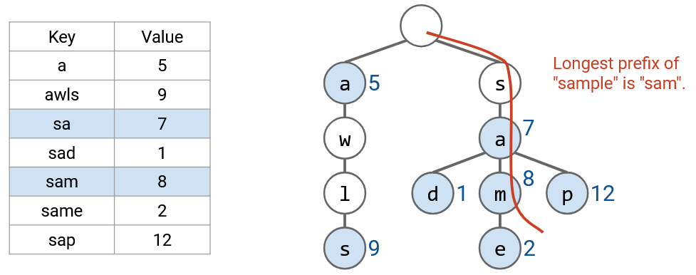Chúng ta có thể sử dụng một cách tiếp cận tương tự cho forwarding table của mình. Mỗi tầng của trie đại diện cho một trong các chữ số trong địa chỉ IP. Tầng thứ không là gốc (chuỗi rỗng), tầng thứ nhất đại diện cho bit đầu tiên, tầng thứ hai đại diện cho bit thứ hai, v.v.
Mỗi nút trong trie đại diện cho một tiền tố. Ví dụ, tiền tố 2-bit 11* ở tầng thứ hai của cây, và tiền tố 3-bit 100 ở tầng thứ ba của cây. trie có tất cả các tiền tố 3-bit có thể có. Nếu một tiền tố có trong forwarding table, tại nút tương ứng, chúng ta ghi chặng tiếp theo. Nếu tiền tố không có trong forwarding table, chúng ta không ghi gì vào nút đó (trong hình, được tô màu trắng).
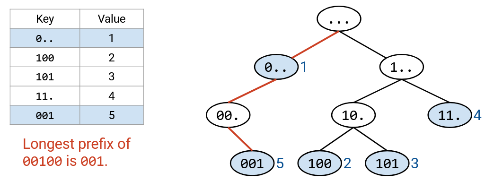Việc đi theo đường dẫn xuống cây có thể được thực hiện trong thời gian hằng số. Chúng ta duyệt một nút cho mỗi bit của địa chỉ đích, và địa chỉ đích luôn là 32 bit (hằng số). Ngay cả khi forwarding table có hàng triệu mục, chúng ta vẫn sẽ chỉ chọn ra 32 nút.
Nếu không có các dải chồng chéo, mỗi tiền tố hợp lệ tương ứng với một nút lá. Nếu các dải chồng chéo, một nút không phải lá cũng có thể là một tiền tố hợp lệ.
Như trước đây, chúng ta sử dụng địa chỉ đích để theo một đường đi xuống cây. Nếu chúng ta đi ra khỏi cây, chúng ta dừng lại sớm và chọn tiền tố dài nhất trong số các nút chúng ta đã duyệt qua.
Như một sự tối ưu hóa nhỏ, khi chúng ta đi xuống cây, chúng ta có thể theo dõi kết quả khớp tiền tố dài nhất đã thấy cho đến nay. Đây sẽ luôn là kết quả khớp gần đây nhất, vì các tiền tố trở nên dài hơn khi chúng ta đi xuống cây. Nếu chúng ta đi ra khỏi cây, chúng ta sử dụng kết quả khớp tiền tố dài nhất (kết quả khớp gần đây nhất chúng ta tìm thấy).
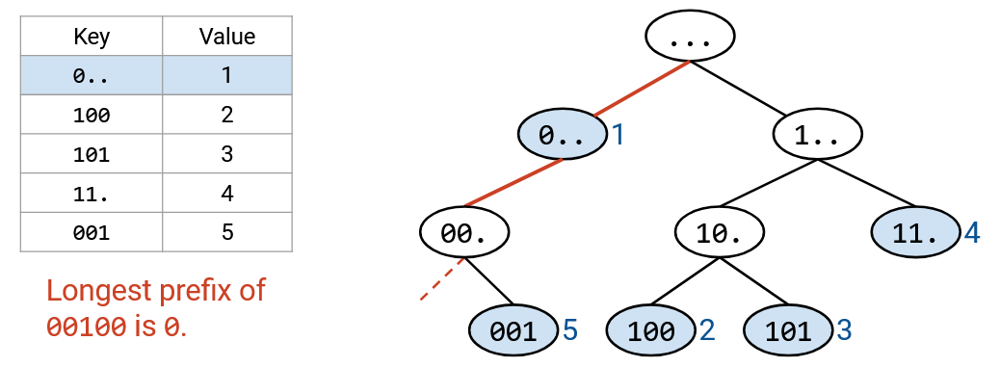Lưu ý rằng default route sẽ được lưu trữ trong nút gốc (tiền tố có độ dài 0). Thuật toán đi xuống cây của chúng ta đảm bảo rằng chúng ta chỉ sử dụng default route nếu không có tiền tố nào khác khớp.
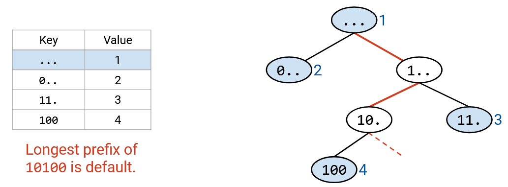Tất cả các router đều có một dạng chức năng longest prefix matching, nhưng một số sử dụng các giải pháp tiên tiến hơn những router khác. Ví dụ, chúng ta có thể thêm các phương pháp phỏng đoán và tối ưu hóa dựa trên các giả định của Internet trong thế giới thực. Một số đích có thể phổ biến hơn, vì vậy chúng ta có thể muốn tra cứu chúng hiệu quả hơn. Một số port có thể được sử dụng cho nhiều dải hơn. Internet hiện đại có một số quy ước về kích thước tiền tố (ví dụ: tiền tố IPv4 dài nhất cho các tuyến đến các mạng khác là 24 bit). Chúng ta cũng có thể thực hiện các tối ưu hóa để cập nhật các forwarding table.